从经济特区的选址与实践 | 汇报人：第一小组
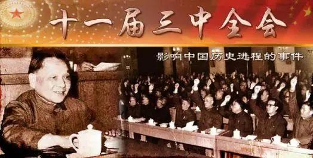
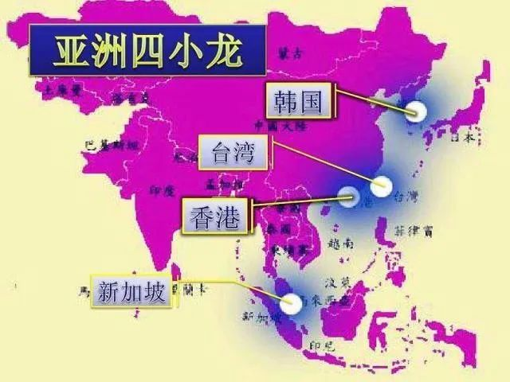
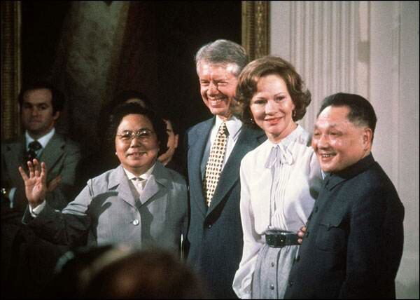
| 深圳 | 珠海 | |
| 对接对象 | 香港 | 澳门 |
| 主要优势 | 国际市场、资金、制造业、外贸渠道 | 跨境区位、旅游商贸、珠江西岸空间 |
| 早期功能 | 承接香港产业外溢，发展出口加工 | 对接澳门，补齐西岸开放窗口 |
| 长远延续 | 深港合作、前海合作区、粤港澳大湾区 | 横琴粤澳深度合作区、港珠澳联动 |
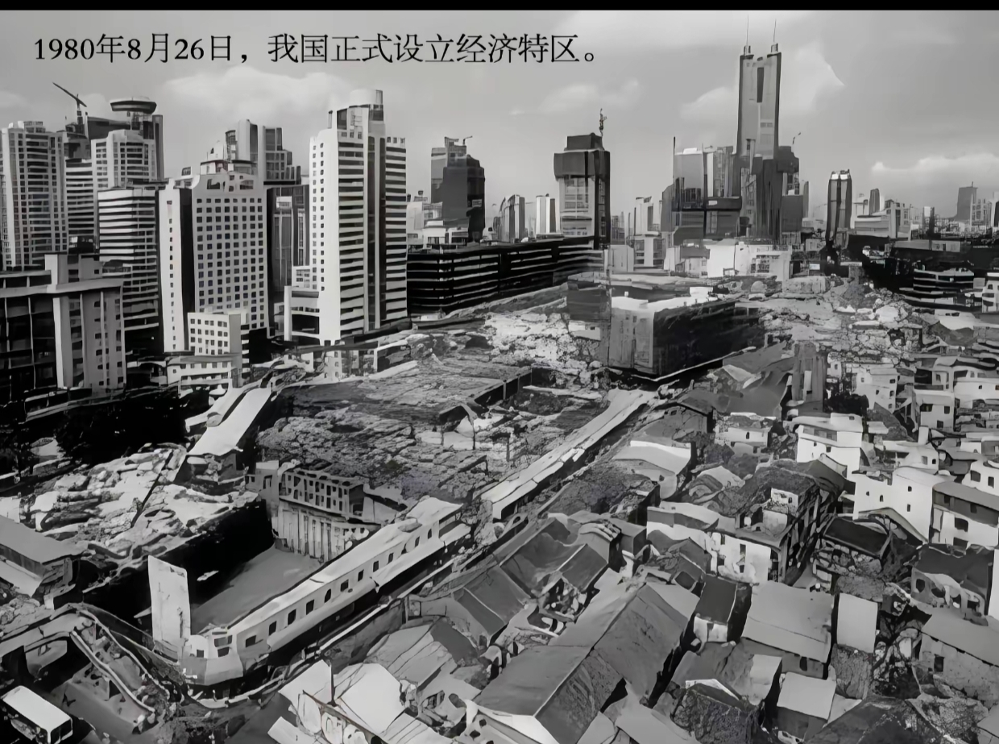
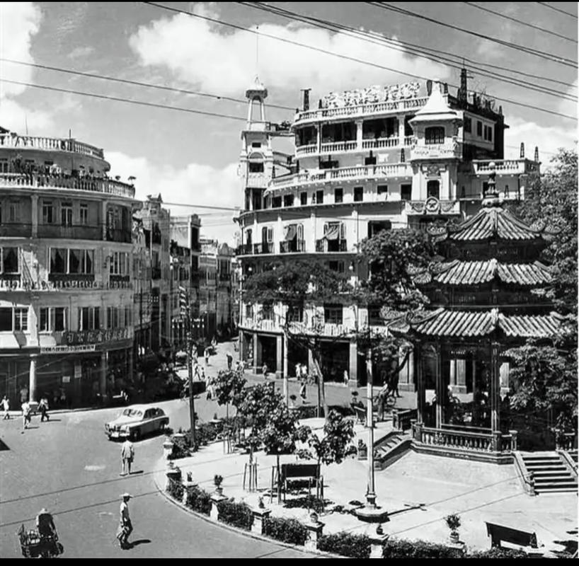
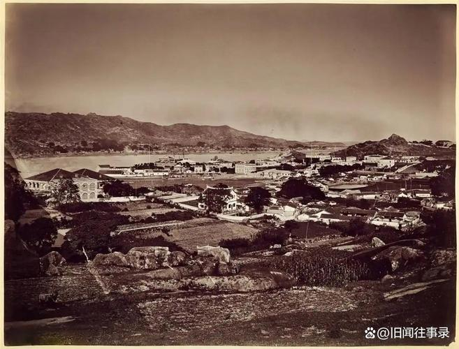
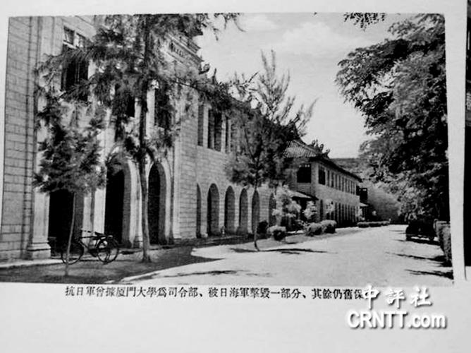
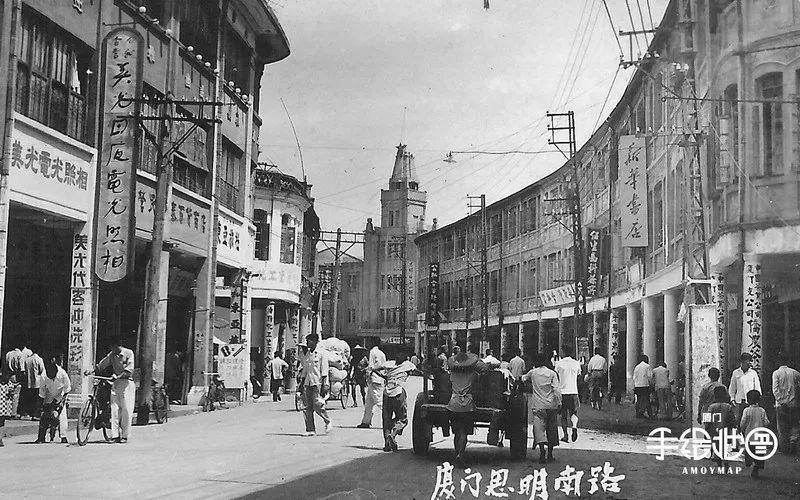
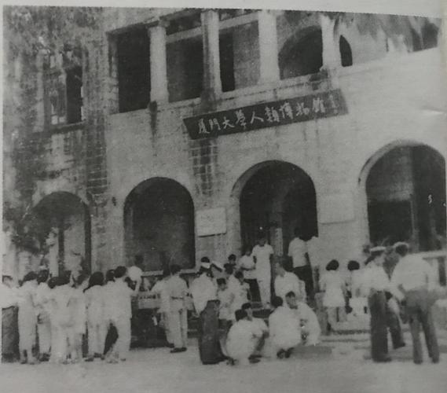
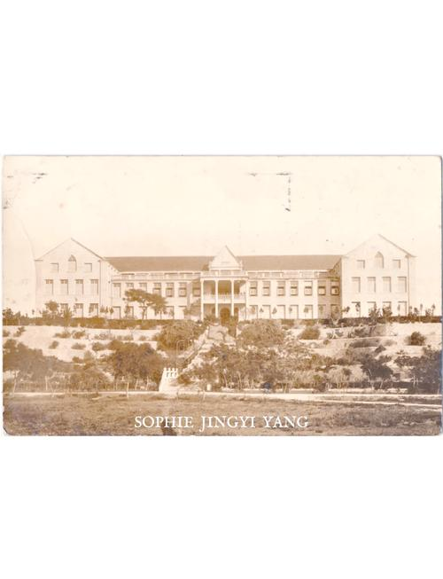
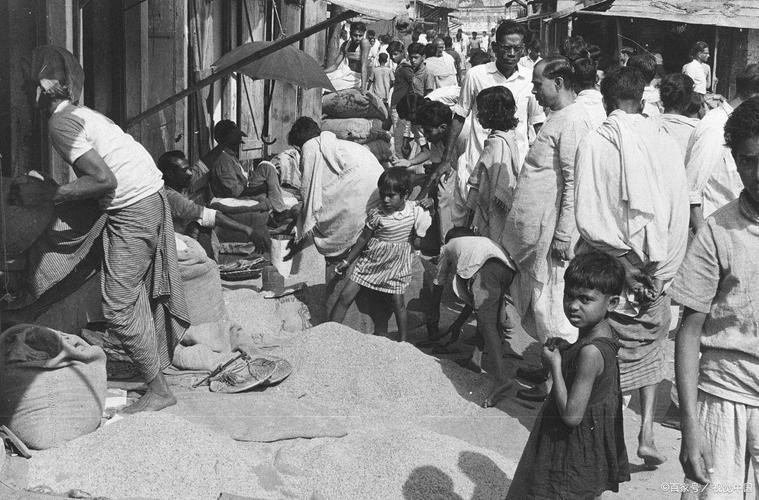
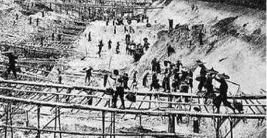
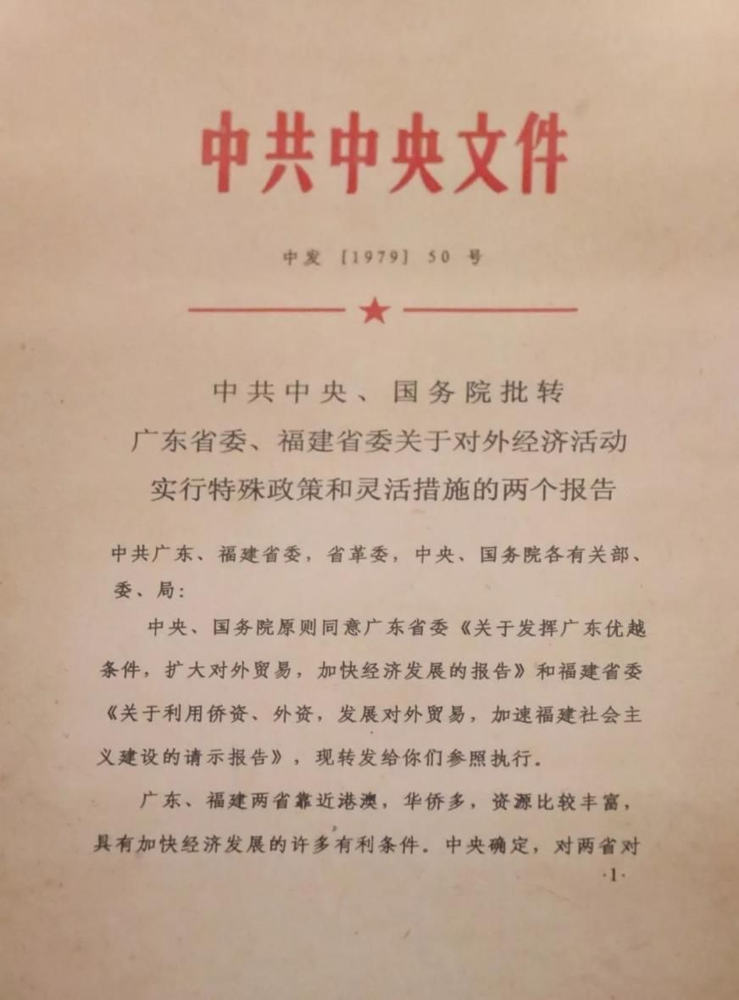
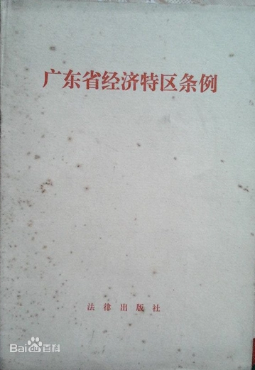
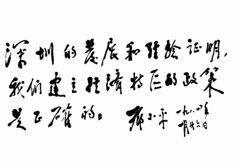
| 指标 | 1980 年 | 1990 年 | 10 年累计增长 | 特区贡献占比 |
| 全国实际利用外资总额 | 20.23 亿美元 | 102.89 亿美元 | 408.6% | 四大特区累计贡献 34.7% |
| 全国进出口总额 | 381.4 亿美元 | 1154.4 亿美元 | 202.7% | 四大特区累计贡献 28.3% |
| 全国市场化改革试点政策数量 | 12 项 | 117 项 | 875% | 70% 以上政策先在特区试点后全国推广 |
| 全国沿海开放城市 / 地区数量 | 4 个（四大特区） | 14 个沿海城市 + 5 个经济开放区 | 375% | 全部以特区试点经验为基础推广 |
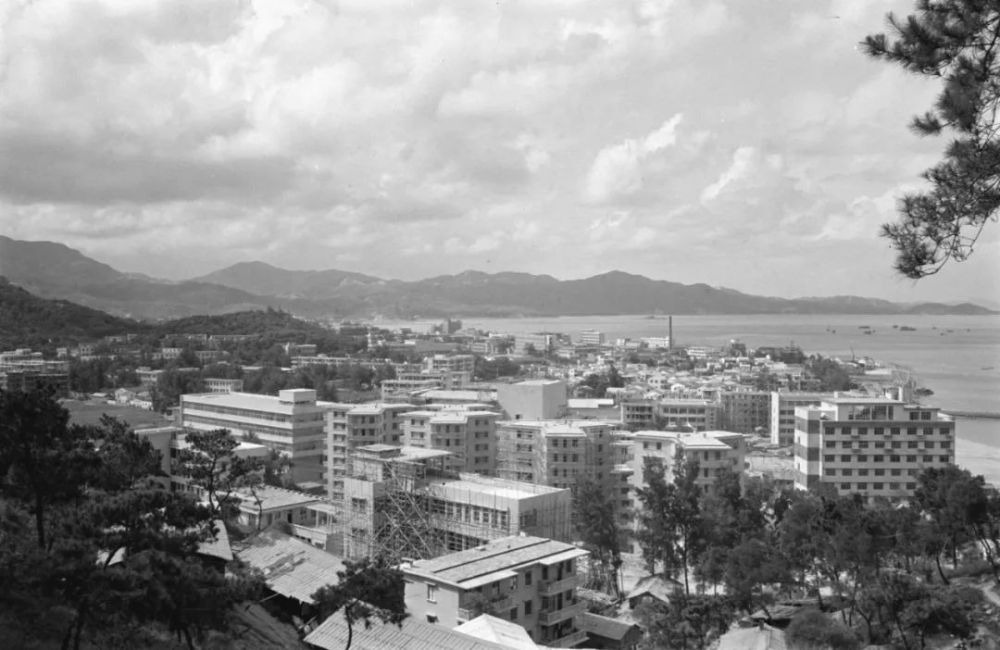
汇报人：第一小组